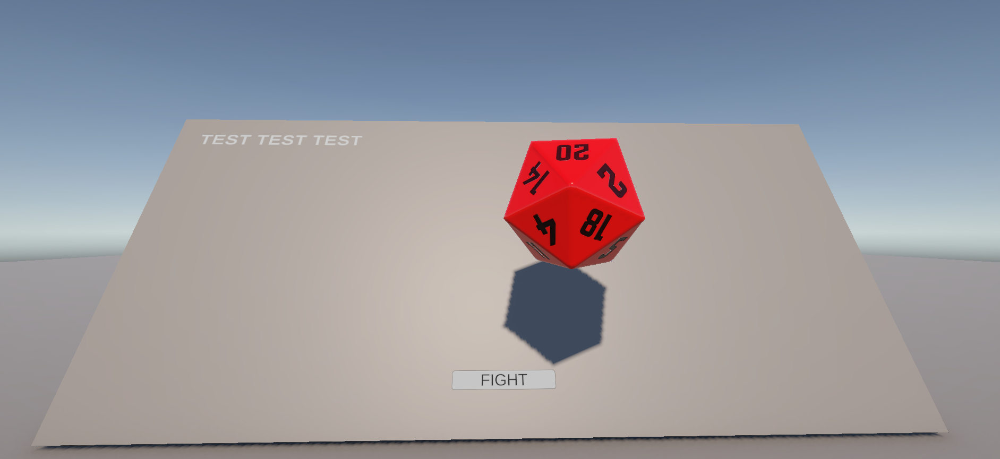
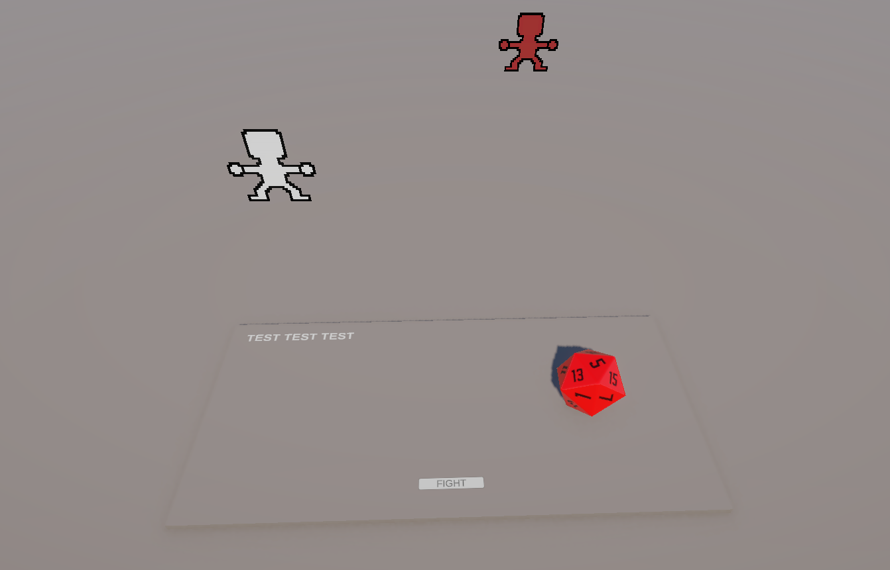

Proyecto destacado
A Game About Grocery Shopping
Un videojuego de comedia basado en texto con elementos de RPG por tunos.
A Game About Grocery Shopping (AGAGS) es un proyecto secundario que desarrollo en solitario. Es un juego corto basado en texto con una historia de comedia en el que el protagonista se queda sin cerveza mientras ve un partido y sale ebrio a la calle en busca de más bebida.

Actualmente se encuentra en una versión muy alpha, así que no puedo mostrar mucho más que un par de capturas de la mecánica principal de combate. Encargado de todo el desarrollo del juego, incluyendo sprites, arte e historia.
